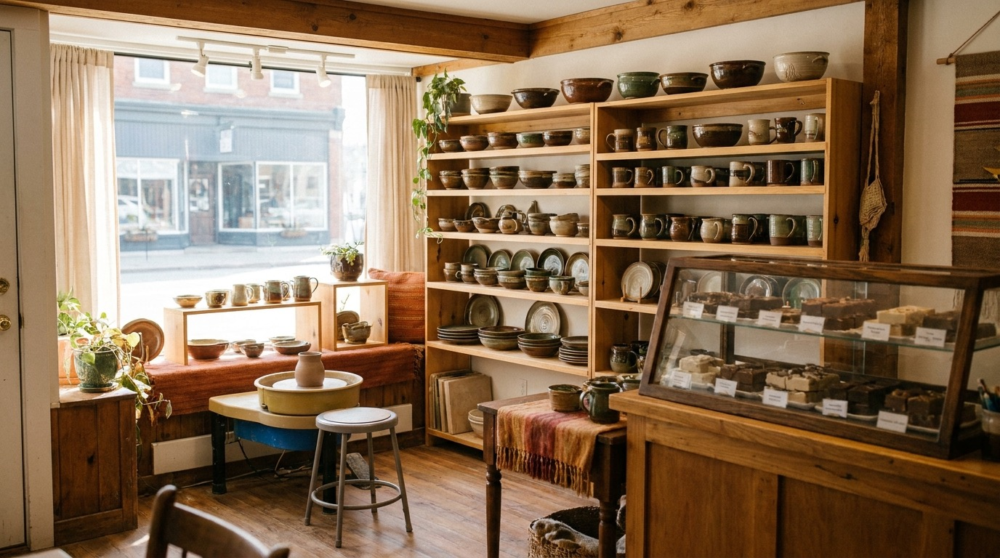
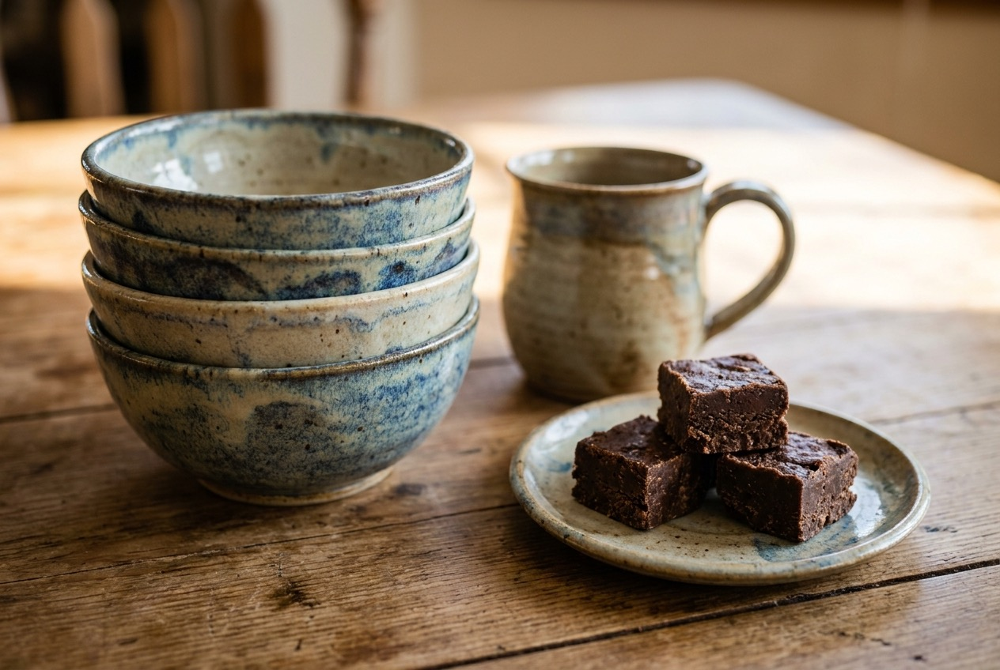

Hand-thrown stoneware
Bowls, mugs, and serving pieces thrown by hand. Sturdy stoneware that's meant for everyday meals, not a shelf.

Main Street, Salado, Texas
Stoneware bowls and table settings you can actually use, plus Sir Wigglesworth's fudge in a dozen flavors. Come find us at 18 N. Main St. in downtown Salado.
What's in the shop
Everything here is made to be used. The pots go in the oven and the dishwasher. The fudge goes in the car for the drive home, if it lasts that long.
Bowls, mugs, and serving pieces thrown by hand. Sturdy stoneware that's meant for everyday meals, not a shelf.
Pieces you'll reach for every day. Oven safe and dishwasher safe, so they keep up with real cooking.
Plates, platters, and little pieces that pull a table together. Mix and match, or build a set over time.
Homemade fudge in a dozen flavors, made right here in the shop. Pick a few squares for the road or a box to take home.
Get your hands muddy
Sit down at the wheel and make something yourself. We offer pottery classes for folks who want to throw their own bowl or mug, no experience needed. Call the shop and we'll walk you through what's coming up and how to get a seat.
Call to ask about a classClass times change, so a quick call is the surest way to get the current schedule.
Our shop on Main
Salado is a town people slow down for. They wander Main Street, look in the windows, and find places worth remembering. Our shop is one of those stops. You can watch stoneware get thrown, pick out a bowl that'll outlast most of your kitchen, and grab a square of Sir Wigglesworth's fudge on the way out.
Titia runs the shop, and the whole idea is simple. Make good pottery you'll actually use, make fudge worth driving for, and keep both under one roof so a visit feels like a treat. If you're planning a trip to Salado, put 18 N. Main St. on your list.
A look inside

Good to know
We're at 18 N. Main St., Salado, TX 76571, right on Main Street in downtown Salado. Use the directions button and your maps app will take you straight to the door.
Our hours are listed in the Visit section below, but please treat them as a placeholder until we confirm them with you. The fastest way to be sure we're open is to call (254) 913-2841.
We're on Main Street with the usual downtown Salado street parking nearby. If you're not sure where to land, give us a call and we'll point you to the closest spot.
Yes. The stoneware is hand-thrown and Sir Wigglesworth's fudge is made by hand, both under one roof. Come watch, then take a little of each home.
Call the shop and we'll tell you what's coming up and how to reserve a seat. Class times shift, so a quick call is the best way to get the current schedule.
Come see us
These hours are a placeholder. Send us your real hours and we'll set them before launch.
Questions about a piece, a class, or a fudge order? Drop a line and we'll get back to you.